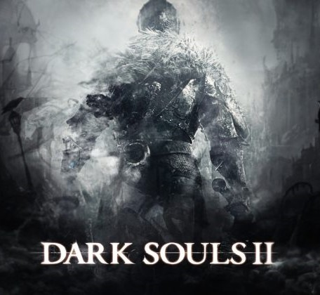

DARK SOULS

DARK SOULS
Dark Souls je RPG videohra vytvořená firmou FromSoftware a publikovaná firmou Bandai Namco Entertainment v září 2011. Verze pro Microsoft Windows byla vydána v srpnu 2012 pod názvem Dark Souls: Prepare to Die Edition. Vylepšená verze hry, která přinesla zlepšené grafické zpracování a stabilitu a rovnou obsahuje DLC Artorias of the Abyss vyšla v květnu 2018 pod názvem Dark Souls: Remastered. Na hru nepřímo navazují další dva díly ze série, a sice Dark Souls II a Dark Souls III. Hra se odehrává ve fiktivním království Lordranu, které připomíná středověkou Evropu, a je zasaženo prokletím a invazí démonů a nemrtvých. Hlavní postavě je svěřen úkol znovu zapálit posvátný oheň a obnovit tak pořádek věcí. Gameplay Dark Souls je vázán na zkoumání světa, hledání klíčových položek a ničení bossů. Hra se vyznačuje vysokou mírou složitosti, předpokládá se tedy, že herní postava čas od času zemře a hráč se poučí ze svých chyb. Dark Souls obdržela pozitivní ohlasy už před svým vydáním a byla považována za jednu z nejlepších videoher. Ovšem názor například na obtížnost hry byl smíšený. Zatímco někteří chválili výzvu, kterou hra poskytuje, jiní ji kritizovali za to, že je zbytečně nemilosrdná. Verze pro Windows také obsahovala nějaké části, které verze pro PlayStation 3 a pro Xbox 360 neobsahovaly. Do dubna 2013 se po celém světě prodalo přes dva miliony kopií této hry. Hratelnost Dark Souls je RPG videohra hraná z perspektivy třetí osoby. Hráč má k dispozici širokou škálu zbraní k boji proti nepřátelům. Štíty je ve hře možné použít jako sekundární zbraně, ale jsou určené hlavně k odrážení nepřátelských útoků a ochraně hráče před poškozením. Každá zbraň má dva základní typy útoků: standardní a silný útok. Silný útok oproti standardnímu způsobí větší poškození, je ale pomalejší. Ústředním prvkem Dark Souls jsou bonfiry, meče zaražené v ohništi. Bonfiry jsou rozptýleny po celém světě a slouží jako kontrolní body (takzvané „checkpointy“) pro každou úroveň, tedy fungují tak, že pokud hráčova postava zemře, je automaticky teleportována zpět k poslednímu bonfiru. Když hráč nějakou dobu u ohně odpočívá, je zcela uzdraven. Léčebné lektvary jsou tak sice obnoveny, ale všichni nepřátelé (kromě bossů, mini-bossů a specifických hrdinů) jsou znovuzrozeni. Při odpočinku si hráči mohou zvýšit úroveň a provádět další klíčové akce, kupříkladu se přemisťovat mezi jednotlivými bonfiry (forma rychlého cestování, tzv. „fast travel“). Hráč může také sesílat kouzla pomocí katalyzátorů. Systém magie je převzat z předchozí hry Demonʼs Souls z roku 2009. Ve hře existuje Estus Flask, léčebný lektvar, který doplňuje zdraví hlavní postavy. Hráč může zvýšit počet Estus Flask v oblasti zvané Firelink Shrine (česky Svatyně spojení s ohněm). Dalším aspektem Dark Souls je „lidskost“, v originále Humanity. Existují dva druhy lidskosti, ve kterých může být postava hráče během hry: lidská forma a prázdná forma (Hollow form). Kdykoliv hráč zemře v lidské podobě, vrátí se do prázdné podoby a jeho lidskost se může obnovit pouze použitím speciálního předmětu zvaného „Humanity“. Aby hráč získal pomoc jiných hráčů, musí být v lidské podobě. V lidské podobě je hráč ale vystaven invazím NPC a ostatním hráčů, kteří se ho snaží zabít a obnovit tak svojí vlastní lidskost. Lidskost může být získána mnoha způsoby, pokud ovšem není k dispozici, hráči jsou schopni postupovat hrou i v prázdné formě. Smrt v jakékoliv formě vede ke ztrátě nejen lidskosti, ale i všech získaných duší. Hráč se pak může oživit jako prázdný u svého posledního ohně a bude mít jen jednu šanci, aby se vrátil k místu, kde zemřel, a obnovil zde všechny ztracené duše a lidskost. Pokud hráč zemře dříve, než dosáhne tohoto místa (svého „bloodstainu“), duše a lidskost, které dříve nashromáždil, jsou trvale ztraceny.
DARK SOULS II
DARK SOULS II
Dark Souls II je RPG videohra na hrdiny vytvořená společností FromSoftware a publikovaná Bandai Namco Entertainment v březnu 2014 pro PlayStation 3 a Xbox 360, a v dubnu 2014 pro Microsoft Windows. Vylepšená verze hry, zvaná Dark Souls II: Scholar of the First Sin, vyšla o rok později v březnu 2015 v Japonsku a v dubnu 2015 celosvětově. Samotná hra je nepřímým pokračováním hry Dark Souls, přičemž dalším dílem v sérii je Dark Souls III. Přestože Dark Souls i Dark Souls II jsou zasazené do stejného univerza, příběh mezi prvním a druhým dílem není nijak propojen. [1] Hra se odehrává ve fiktivním království Drangleic, přičemž se hráč ujímá role anonymního nemrtvého, který se chce vrátit zpět k životu. Samotná videohra pak obsahuje multiplayer, který nabízí možnost hry hráč versus prostředí (PvE) a hráč versus hráč (PvP). Tak jako dřívější hry v Souls sérii, i tato hra představuje značnou výzvu, ale s výkonnějším grafickým enginem a vylepšeným systémem umělé inteligence. Po několika menších odkladech byla hra celosvětově vydána v březnu 2014, přičemž verze pro Microsoft Windows vyšla 24. března 2014. [2] [3] Hra obdržela většinou kladné reakce. [4] [5] Vylepšená verze hry, nazvaná Dark Souls II: Scholar of the First Sin, byla vydána na PlayStation 3, PlayStation 4, Xbox 360, Xbox One a Microsoft Windows v dubnu roku 2015. Tato verze obsahuje jak základní hru, tak i všechen stahovatelný obsah, vylepšenou grafiku, zvětšenou kapacitu pro multiplayer a další změny. Roku 2016 pak bylo vydáno pokračování Dark Souls III. Gameplay Dark Souls II si ponechává velmi podobné mechaniky a prvky jako předešlý díl. Hra známá pro svou vysokou obtížnost, bossové i běžní nepřátelé mají potenciál porazit hráče pouze několika údery. [6] [7] Nezodpovědný přístup k soubojům je potrestán častou smrtí hlavní postavy, příležitosti k vyléčení jsou omezené, a s každou smrtí klesá hráčovo maximální zdraví, dokud hráč neobětuje vzácný předmět k jeho obnově. Hra využívá vlastní herní měny ve formě „souls“ („duší“), jež jsou užívány pro levelování postavy a zároveň jako měna v obchodech. Pokud hráč zemře, všechny duše zůstávají u mrtvoly, ale pokud nejsou včas sebrány, navždy zmizí. Multiplayer v Dark Souls II využívá stejného formátu jako předešlý díl; hráči si volí mezi kooperativní hrou, kdy jsou „přemístěni“ do hry jiného hráče a společně v ní postupují mapou, anebo si zvolí možnost hráč proti hráčovi ve formě napadnutí cizí hry či duelu v aréně. Oboje formy multiplayeru dávají hráče k sobě náhodně, ale vybírá postavy na stejné úrovni pro rovný souboj. Příběh Příběh Dark Souls II tak jako předchozí díl začíná vyhasínajícím Prvním plamenem (First Flame). Tak jako se to stalo už dříve v minulosti, Věk ohně (Age of Fire) se kvůli tomu blíží ke svému konci. V důsledku těchto událostí se světem opět šíří prokletí, které mění lidi v nemrtvé. Takové jedince čeká jen jediná možná budoucnost, a sice proměna v prázdné (Hollows), bezduché zatracence podobné zombie. Tímto prokletím byl zasažen i hlavní hrdina hry (zvaný Nositel prokletí – The Bearer of the Curse), který si je zoufale vědom osudu každého nemrtvého. Tomu chce samozřejmě za každou cenu zabránit, pročež odcestuje do zaniklého království Drangleic, o němž se tvrdí, že zde nalezli způsob, jak zlomit prokletí nemrtvých. Zde se setkává se Smaragdovou heroldyní (Emerald Herald), která mu uloží úkol, aby nalezl krále Vendricka, který může znát způsob zlomení prokletí, a sám se ujmul trůnu. Leč k tomu, aby mohl krále nalézt, potřebuje získat mocné duše čtyř Starých (Old Ones), jelikož má dle slov heraldyně „příliš slabou duši“. Staří jsou prastaré bytosti, jejichž pravá jména byla dávno zapomenuta a které dost možná mají určité spojení s bývalými držiteli Duší Lordů (Souls of Lords). Jakmile hráč porazí čtyři Staré, kteří jsou: Starý železný král (Old Iron King), Ztracený hříšník (Lost Sinner), Zkažený (The Rotten) a Vévodova drahá Freja (The Dukeʼs Dear Freja), získá jejich duše a cestuje dál do Drangleického hradu (Drangleic Castle) v hlavním městě, kde se setkává s královnou Nashandrou. Ta mu vysvětlí, že král Vendrick selhal ve své povinnosti, dávno opustil své království a zapečetil se v Kryptě nemrtvých (Undead Crypt), na místě, které zde stálo už za úsvitu světa. Zaúkoluje hráče, aby Vendricka nalezl a zabil. V Kryptě hráč nalézá Velstadta, věrného králova ochránce, jehož musí zabít, a vzápětí i samotného Vendricka. Stal se z něj nemrtvý prázdný, jen bezduchá troska. Hráč jej může zabít či nechat napospas hroznému osudu (zabití krále umožňuje děj DLC trilogie The Lost Crowns). Tak či onak zde nalézá Králův prsten (Kingʼs Ring), který jej dovede do Aldiovy bašty (Aldiaʼs Keep), do pevnosti, v níž přebývá lord Aldia, králův bratr a Učenec Prvního hříchu (Scholar of the First Sin), který se hráčovi už několikrát zjevil a apeluje na něj, aby usedl na trůn. Zde hlavní hrdina od Pradávného draka (Ancient Dragon), který pozoruje svět po celé věky a očekává příchodu hráčovy postavy, dostane Srdce popelavé mlhy (Ashen Mist Heart), artefakt schopný přemístit svého držitele v čase do vzpomínek získaných z mrtvých těl. Hlavní hrdina následně cestuje do Lesa padlých obrů (Forest of Fallen Giants), kde se díky vzpomínkám dávno mrtvého obra Jeigha přesouvá v čase do doby, kdy se Drangleic stal obětí nájezdu obrů. Zde zabíjí Pána obrů (Giant Lord) a bere Vazbu obrů (Giant's Kinship), což je klíč k Trůnu chtíče (Throne of Want), jedinému pravému trůnu Drangleicu zaručujícího moc. Mimoto v minulosti při bitvě s obry a napříč celou hrou z různých náznaků hráč zjišťuje, že zničení království ve skutečnosti způsobila Nashandra, nikoliv Vendrick. Přišla za králem a přesvědčila ho, aby z ní nejen udělal svou královnu, ale také zahájil pošetilou invazi přes moře do země obrů. Toužila totiž ukrást jejich moc. Ačkoliv se při nájezdu podařilo získat nespecifikovanou kořist, která posílila království Drangleic, po čase se obři rozhodli vrátit úder. Přestože byl Pán obrů při bitvě zabit (jak již víme, hlavním hrdinou hry) a obři zatlačeni zpět, Drangleic se změnil v trosky. Navíc První plamen začal vyhasínat, v důsledku čehož se zbylí obyvatelé začali měnit v nemrtvé. I přes značnou Vendrickovu snahu nebylo prokletí zastaveno a království tak padlo. Tehdy také Vendrick zjistil, co je Nashandra zač a jaké jsou její skutečné úmysly. Jak je odhaleno v DLC trilogii The Lost Crowns, Nashandra je kus Manuse (hlavní boss z DLC Artorias of the Abyss z prvního dílu), jehož zlá duše se v okamžiku smrti roztříštila na několik kousků, které záhy nabyly fyzické podoby. Nashandra se chtěla chopit Trůnu chtíče a sama svrchovaně vládnout své říši. Jakmile tohle všechno Vendrick zjistil, pojistil se, aby na trůn královna nikdy neusedla a uzavřel se do Krypty nemrtvých mimo její dosah. Hlavní hrdina se poté vrací do přítomnosti do Drangleického hradu, kde se naposledy setkává se Smaragdovou heroldyní, jež požádá hlavního hrdinu, aby zlikvidoval Nashandru, jelikož představuje příliš velkou hrozbu. Též mu navrhne obětovat se Prvnímu plameni a prodloužit tak Věk ohně, čímž by sice zastavil prokletí nemrtvých, ale pouze dočasně; rozhodnutí však nechává na něm. Hlavní hrdina se tedy vydá k Trůnu chtíče. Poté, co zde porazí Hlídače a Strážce Trůnu (Throne Watcher and Defender), jej čeká hlavní boss Nashandra, u které se projevila její pravá hrozivá podoba, a která chce využít hlavního hrdiny k dosažení trůnu. Po její porážce začíná konečná sekvence. Pokud hráč splnil určité požadavky napříč celou hrou, čeká jej ještě souboj s Aldiem, který si chce ověřit, zda je hlavní hrdina opravdu hoden trůnu. Po souboji je hráčovi uloženo rozhodnutí, které ovlivní samotný konec hry: 1. Ujmutí se trůnu: Jediný možný konec v původní verzi hry. Hlavní hrdina přijme svou část v nekonečném cyklu světa a přijme trůn. Usedne na Trůn chtíče, přičemž se někdy v budoucnu buďto obětuje Prvnímu plameni, aby hořel dál, anebo jej nechá vyhasnout a stane se Temným pánem s vlastními záměry. Jakou budoucnost si hlavní hrdina zvolí, zůstává otázkou. 2. Opuštění trůnu: Hlavní hrdina odmítne usednout na Trůn chtíče s tím, že nehodlá dopadnout jako všichni před ním, a odmítne se stát součástí opakujícího se cyklu světa. Hořce odejde pryč s úmyslem sám rozhodovat o svém osudu a pokud možno najít jiný způsob, jak zastavit prokletí.
DARK SOULS III

DARK SOULS III
Dark Souls III je RPG videohra vytvořená firmou FromSoftware a publikovaná firmou Bandai Namco Entertainment. Hra je dostupná pro PlayStation 4, Xbox One a Microsoft Windows. Hra byla vydána jakožto třetí díl Dark Souls [1] série v březnu roku 2016 v Japonsku, přičemž pokračuje v sérii po Dark Souls a Dark Souls II. Celosvětově byla hra vydaná v dubnu roku 2016. [2] V dubnu 2017 vyšla plná verze hry obsahující obě DLC pod názvem Dark Souls III: The Fire Fades. Hra byla pozitivně přijata jak kritiky, tak hráči. Dark Souls III se stala nejrychleji prodávanou hrou firmy Bandai Namco Entertainment v historii. Po uplynutí dvou měsíců od celosvětového vydání hry bylo prodáno přes tři miliony kopií. Obsah 1 Hratelnost 2 Příběh 3 DLC Ashes of Ariandel a The Ringed City 3.1 Ashes of Ariandel 3.2 The Ringed City 4 Reference 5 Externí odkazy Hratelnost Dark Souls III je RPG videohra hraná z perspektivy třetí osoby, podobně jako předchozí hry série. Hráč má k dispozici širokou škálu zbraní k boji proti nepřátelům. Štíty je ve hře možné použít jako sekundární zbraně, ale jsou určené hlavně k odrážení nepřátelských útoků a ochraně hráče před poškozením[3]. Každá zbraň má dva základní typy útoků: standardní útok a silný útok, který uděluje větší poškození, ale je pomalejší. Nepřátelským útokům se lze vyhnout pomocí tzv. dodge-rollu[4]. Tzv. Bonfiry slouží jako checkpointy stejně jako v předchozích hrách série. Hráč může také sesílat kouzla pomocí katalyzátorů. Systém magie je převzat ze hry Demon's Souls. Kouzla jsou sesílána za cenu tzv. Focus Pointů (FP). Každé kouzlo má jinou cenu FP. Ve hře jsou dva druhy Estus Flasek (Estus Flask), přičemž první doplňuje FP a druhá HP (životy). Hráč může libovolně měnit počet Estus Flasek ve Firelink Shrinu. V předchozích hrách existoval pouze druh doplňující životy. Během hry hráč narazí na různé druhy nepřátel s různými vzorci chování. Někteří z nich mění styl svých útoků během boje. Novinkou oproti předchozím hrám jsou tzv. Weapon arty, což jsou speciální útoky, které jsou unikátní pro každou zbraň. Weapon arty můžou mít různé speciální efekty, jako např. poškození magií, ale při jejich použití jsou spotřebovávány FP. Hra klade větší důraz na "role-playing" element díky širší škále zbraní a rozšířeným možnostem modifikace postavy. Hra obsahuje méně oblastí než Dark Souls II, ale jsou větší a mají propracovanější detaily, což hráče povzbuzuje k průzkumu. Příběh Děj Dark Souls III začíná stejnou premisou jako předchozí díly. Tak jako už mnohokrát v minulosti, První plamen (First Flame) opět vyhasíná. Ten byl doposud zodpovědný za udržování Věku ohně (Age of Fire), který se však chýlí ke svému konci. Jak se blíží Věk temna (Age of Dark), světem se opět šíří prokletí, které mění lidi v nemrtvé. Takoví jedinci se postupně stávají prázdnými (Hollows), bezduchými zatracenci, kteří připomínají zombie. Samotný Věk ohně může být prodloužen rituálem, při němž se dostatečně silný jedinec spojí s ohněm a obětuje Prvnímu plameni svůj život, čímž opět rozdmýchá chřadnoucí oheň. V historii se s ohněm spojilo už mnoho velkých hrdinů a mocných lordů, a nyní nadchází čas na nové obětování. V království Lothric zvoní zvon, který ohlašuje vyhasínání Prvního plamene. Hrdinou, který se má spojit s ohněm a obětovat mu svůj život, byl pro tento věk vyvolen mladý princ Lothric. I přesto, že k tomuto činu byl celý svůj život veden a vychováván, se princ rozhodl nesplnit svou povinnost, a místo toho sleduje oheň pomalu vyhasínat. Zvon se tak stává poslední nadějí pro Věk ohně. Probouzí totiž čtyři předchozí Pány popela (Lords of Cinder; hrdinové, kteří v minulosti obětovali Prvnímu plameni své životy, aby Věk ohně mohl po nějakou dobu přetrvat) ze spánku smrti a přivádí je zpět k životu jako nemrtvé, aby se znovu pokusili o rituál. Ale všichni až na jednoho nevyslyšeli volání a odmítli usednout na své trůny ve Svatyni spojení ohně (Firelink Shrine), kde pro provedení rituálu musí být. Hlavním hrdinou hry je nemrtvý bojovník, jednoduše zvaný Popelavý (Ashen One). Jedná se o Neplanoucího (Unkindled), tedy hrdinu, který se měl kdysi v minulosti spojit s ohněm tak jako Lothric, ale ve svém úkolu selhal. Byl příliš slabý, v důsledku čehož jeho smrt v plamenech přišla vniveč. Jelikož Páni popela odmítli usednout na své trůny, zvuk zvonu probouzí i jeho a několik dalších Neplanoucích, kteří tak povstávají ze svých hrobů. Jejich úkolem je dovést zpupné Pány popela zpět na jejich trůny ve Svatyni spojení ohně, byť mnozí věří, že se to nikomu z nich nemůže podařit. Na rozdíl od předchozích her, Popelavý, přestože je nemrtvý, nepodléhá efektu prázdnění (Hollowing), zřejmě kvůli tomu, že není spjat s temnotou, nýbrž kvůli své smrti v plamenech s ohněm. Popelavý se probouzí na hřbitově, odkud se probije do Svatyně spojení ohně, kde zjišťuje, že jediným Pánem popela, který se dobrovolně vrátil na svůj trůn, je Ludleth z Courlandu (Ludleth of Courland). Ostatní odmítli usednout na své trůny, kvůli čemuž je Popelavý nucen přivést prince Lothrica a zbylé Pány do Svatyně. Samotní Páni popela jsou: Hlídači Propasti (Abyss Watchers), legie válečníků svázaná jednou duší, která přísahala, že bude bránit zemi před Propastí (The Abyss); Aldrich, zvaný Požírač bohů (Aldrich, Devourer of Gods), který se prohlásil prorokem vlastní církve a v honbě za mocí požíral lidi, načež byl donucen spojit se s ohněm; a nakonec Yhorm obr (Yhorm the Giant), potomek dávných dobyvatelů, který se stal oddaným vůdcem svého lidu, pro jehož záchranu se nakonec obětoval Plameni. Hlavní hrdina se tak vydává na cestu, aby vzpůrce přivedl zpět a zachránil skomírající Věk ohně. Jako první se vydává za Aldrichem do Katedrály Hlubiny (Cathedral of the Deep), kde nalézá Kazatele Hlubiny (Deacons of the Deep) strážící Aldrichovu hrobku. Po jejich porážce Popelavý zjišťuje, že Aldrich uprchnul do Irithyllu v Boreálním údolí (Irithyll of Boreal Valley). Pokračuje proto dál do Farronské bašty (Farron Keep), kde nalezne Hlídače Propasti, jak vzájemně bojují mezi sebou, jelikož někteří z nich nedokázali vlivu Propasti odolat. Po jejich smrti se skrz Katakomby Carthusu (Catacombs of Carthus) hlavní hrdina dostane do již zmíněného města Irithyll, jemuž vládne Pontiff Sulyvahn, následovník Aldrichova učení. Po porážce Sulyvahna se otevírá cesta do Anor Londo, dávného města bohů z prvního dílu, kde se v místní katedrále ukrývá Aldrich. Ten se změnil v masu černé hmoty a rozhodl se pozřít bohy. Popelavý jej nalézá ve chvíli, když zrovna požírá Gwynova mladšího syna Gwyndolina. Po Aldrichově smrti čeká hlavního hrdinu cesta do spálených trosek Znesvěceného hlavního města (Profaned Capital), kde vyčkává Yhorm. Ten se zdá být zdánlivě nezranitelný, ovšem mocná čepel zvaná Vládce bouří (Storm Ruler), kterou lze nalézt u obrova trůnu, je jeho fatální slabinou. Po smrti posledního Pána popela je hlavní hrdina přemístěn do Lothrického hradu (Lothric Castle), kde jej kněžna Emma (Emma, High Priestess) požádá, aby přesvědčil prince Lothrica, aby se obětoval Plameni. Popelavý se tedy vydává na cestu skrz obrovskou pevnost, mimoto lze vidět, že slunce potemnělo. Čas konce přichází. V Lothrickém hradu a spjatých lokacích lze svést souboj s několika bossy, například s šíleným a znetvořeným králem Oceirosem, zvaným Pozřený král (Oceiros, the Consumed King); Šampionem Gundyrem (Champion Gundyr); nebo s Bezejmenným králem (Nameless King), prvorozeným synem Lorda Gwyna, který se přidal na stranu draků. Hlavní hrdina se nakonec dostane do Velkých archivů (Grand Archives), kde prince Lothrica nalézá. V důsledku kletby je jeho duše spoutaná s duší jeho staršího bratra, prince Loriana. Oba sourozenci jsou kvůli tomu neoddělitelní, pokud má zemřít jeden, musí zemřít i ten druhý. Jelikož se Lothric odmítá obětovat Plameni, Popelavý je nucen zabít oba dva. Poté, co Popelavý zabije všechny zpupné Pány popela a prince Lothrica a jejich ostatky umístí na jednotlivé trůny ve Svatyni, Strážkyně ohně (Fire Keeper) přesune jejich moc do Popelavého. Ten se následně vydá do ruin Pece Prvního plamene (Kiln of the First Flame), kde se nachází posvátný První plamen. Zde se utká s Duší popela (Soul of Cinder), což je reinkarnace všech předchozích Pánů popela v jednom těle. Po porážce Duše popela jsou možné čtyři konce (poslední tři konce vyžadují splnění specifických podmínek napříč celou hrou): 1. Spojení s ohněm: Popelavý udělá přesně to, co všichni ostatní Páni popela před ním a provede rituál ve snaze prodloužit Věk ohně a pokračovat tak v nekonečném cyklu světa. Popelavý se spojí s ohněm a začne hořet, načež usedne vedle chřadnoucího Plamene. Slunce na obloze přesto zůstává temné a nic se neděje, nezdá se, že by měl oheň znovu vzplanout. Hlavní hrdina přesto vyčkává. Není tak vůbec jisté, zda je První plamen znovu obnoven. 2. Konec ohně: Popelavý přivolá Strážkyni ohně, která vezme skomírající První plamen do rukou. Poznamenává, že oheň rychle vyhasíná a nastává temnota, ale též předpovídá, že se jednou světlo možná vrátí. Plamen vyhasíná, tma z černajícího slunce pohlcuje svět. Nastává Věk temna, éra lidstva. 3. Zabití Strážkyně: Popelavý přivolá Strážkyni ohně, ale jakmile ta vezme Plamen do rukou, Popelavý ji zabije. Následně z jejího těla uzme Plamen, poklekne a pokorně jej nabídne temnému slunci. Zdá se, že chce Plamen využít pro své vlastní účely. 4. Pohlcení ohně: Popelavý, který se díky magii Yoela z Londoru (Yoel of Londor) stal prázdným (Hollow), pohltí První plamen a uzme jeho sílu. Vzápětí zkolabuje a spadne na zem. Po chvíli se probouzí, okolo něj je klanící se armáda nemrtvých, kteří Popelavého vzývají jako svého Pána prázdných (Lord of Hollows), pravděpodobně nejmocnější bytost ze všech. Žádají jej, aby navrátil moc do země Londor.